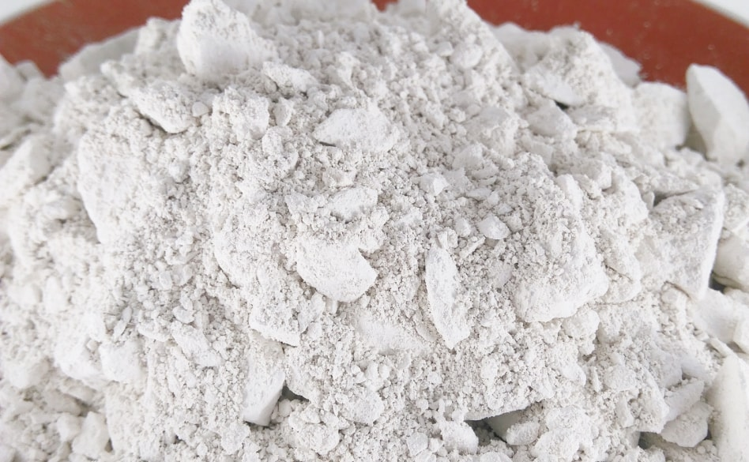

Фасовка
Получить персональное предложение
Кормовая ракушка
Использование кормовой ракушки повышает продуктивность сельскохозяйственных птиц и животных, улучшает качество скорлупы и инкубационные свойства яиц, способствует сохранности молодняка.
Ракушка кормовая без побочных эффектов устраняет хрупкость костей, нарушения кальциевого обмена, нормализует протекание в организме биохимических реакций. Добавление в рацион морской кормовой ракушки позволяет компенсировать дефицит кальция в кормах. Данный продукт является наиболее экономичным источником кальция.
Ракушка кормовая выступает в качестве сырья при производстве комбикормов для сельскохозяйственной птицы и животных, а также применяется непосредственно при кормлении птицы и животных в качестве минеральной добавки естественного происхождения, получаемой из природных залежей.
Морская кормовая ракушка выступает также в качестве гастролита - вещества, которое улучшает измельчение, перетирание и усвоение пищи мускусным желудком декоративных и домашних птиц.
Стоит также сказать и о том, что в организме птиц генетически заложено потребление ракушечника, поэтому кальций и другие микроэлементы полностью усваиваются птицей, что является существенным отличием натуральной морской ракушки от минеральных добавок, выведенных искусственным путем.
Группа Компаний ВЕЛЕС является поставщиком Каспийской морской кормовой ракушки. Предлагаемая нами морская ракушка добывается в Каспийском море, а не карьерным способом, поэтому не содержит песка, грунта и посторонних примесей.
Получить консультацию
Ракушка кормовая без побочных эффектов устраняет хрупкость костей, нарушения кальциевого обмена, нормализует протекание в организме биохимических реакций. Добавление в рацион морской кормовой ракушки позволяет компенсировать дефицит кальция в кормах. Данный продукт является наиболее экономичным источником кальция.
Ракушка кормовая выступает в качестве сырья при производстве комбикормов для сельскохозяйственной птицы и животных, а также применяется непосредственно при кормлении птицы и животных в качестве минеральной добавки естественного происхождения, получаемой из природных залежей.
Морская кормовая ракушка выступает также в качестве гастролита - вещества, которое улучшает измельчение, перетирание и усвоение пищи мускусным желудком декоративных и домашних птиц.
Стоит также сказать и о том, что в организме птиц генетически заложено потребление ракушечника, поэтому кальций и другие микроэлементы полностью усваиваются птицей, что является существенным отличием натуральной морской ракушки от минеральных добавок, выведенных искусственным путем.
Группа Компаний ВЕЛЕС является поставщиком Каспийской морской кормовой ракушки. Предлагаемая нами морская ракушка добывается в Каспийском море, а не карьерным способом, поэтому не содержит песка, грунта и посторонних примесей.

Кормовой мел
Кальций является основным «строительным материалом» в костных тканях, он важен для иммунитета, необходим для нормального течения нервной деятельности, улучшает репродуктивные способности. Однако, в обычных кормах кальций присутствует в недостаточной концентрации.
Именно поэтому в рацион животных необходимо вводить кормовой мел, содержащий до 38% данного элемента. Добавлять мел в рацион животных и птиц необходимо ежедневно. Прудовая рыба также нуждается в кальции, поэтому и в её комбикорм необходимо подмешивать
1-2% мела.
Наличие достаточного количества мела в ежедневном рационе животных обеспечит их кальцием, нормализует обмен веществ, предотвратит рахит у молодняка, сократит период откорма, улучшит репродуктивные функции взрослых особей, повысит яйценоскость у птиц.
Мел кормовой природный молотый применяют животным и птице внутрь в смеси с сухими кормами или влажными мешанками.
Получить консультацию
Наличие достаточного количества мела в ежедневном рационе животных обеспечит их кальцием, нормализует обмен веществ, предотвратит рахит у молодняка, сократит период откорма, улучшит репродуктивные функции взрослых особей, повысит яйценоскость у птиц.
Мел кормовой природный молотый применяют животным и птице внутрь в смеси с сухими кормами или влажными мешанками.

Кормовая соль
Кормовая соль – необходимая составляющая рациона крупного рогатого скота, птицы и других домашних животных. Продукт изготавливается их технической соли, которую дополнительно очищают от остатков пород и вредных веществ. Кормовая соль применяется как в
чистом виде, например, изготовленные из нее лизунцы размещают на пастбищах, так и в качестве добавки в готовый корм для животных. Минеральные соли участвуют в процессе обмена веществ, кроме того, они необходимы для контроля водного режима. Натрий
хлор важен для нервной системы и правильной работы мышц. От соотношения минеральных веществ в организме зависит качество обмена азотистых веществ.
Недостаток данного минерала в организме снижает синтез жиров и протеинов, провоцирует снижение аппетита у молодняка, а также ухудшает рост организма.
Получить консультацию
Недостаток данного минерала в организме снижает синтез жиров и протеинов, провоцирует снижение аппетита у молодняка, а также ухудшает рост организма.